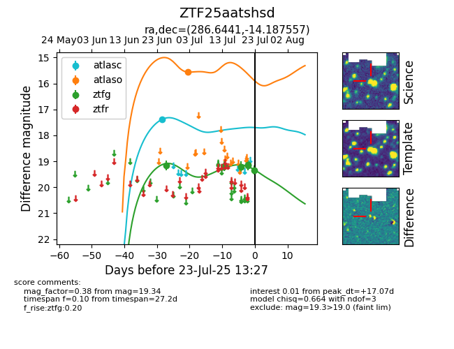

Target ZTF25aatshsd at 2025-07-23 13:27, see:
FINK: fink-portal.org/ZTF25aatshsd
Lasair: lasair-ztf.lsst.ac.uk/objects/ZTF25aatshsd
ALeRCE: alerce.online/object/ZTF25aatshsd
alt names
ZTF25aatshsd (ztf,fink)
coordinates:
equatorial (ra, dec) = (286.6441,-14.18756)
galactic (l, b) = (21.8798,-9.71303)
photometry
last atlasc=17.38, atlaso=15.56, ztfg=19.34
1 atlasc, 1 atlaso, 6 ztfg detections
